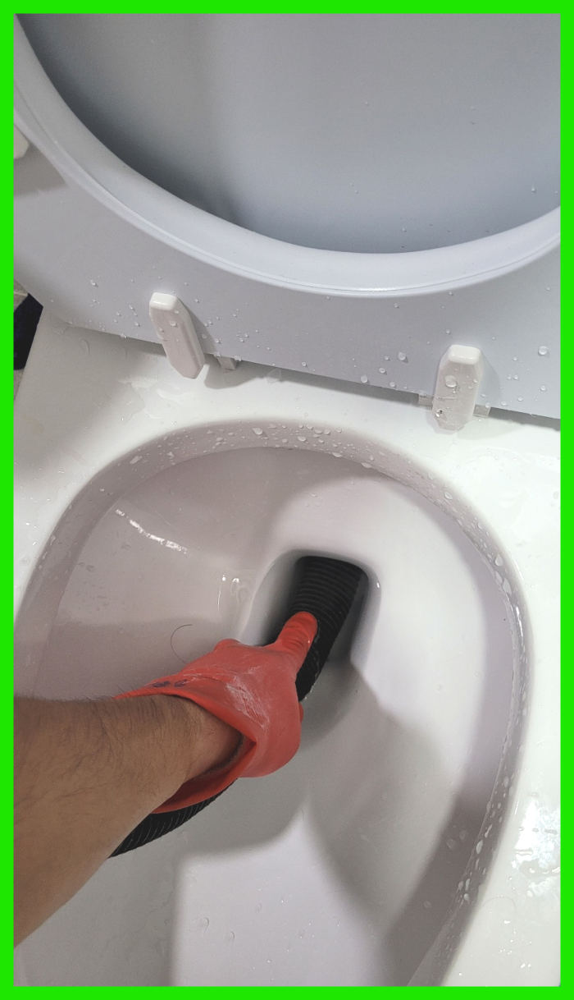
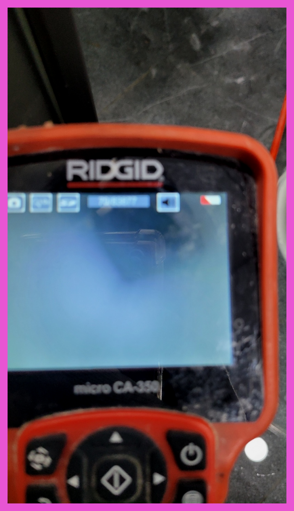
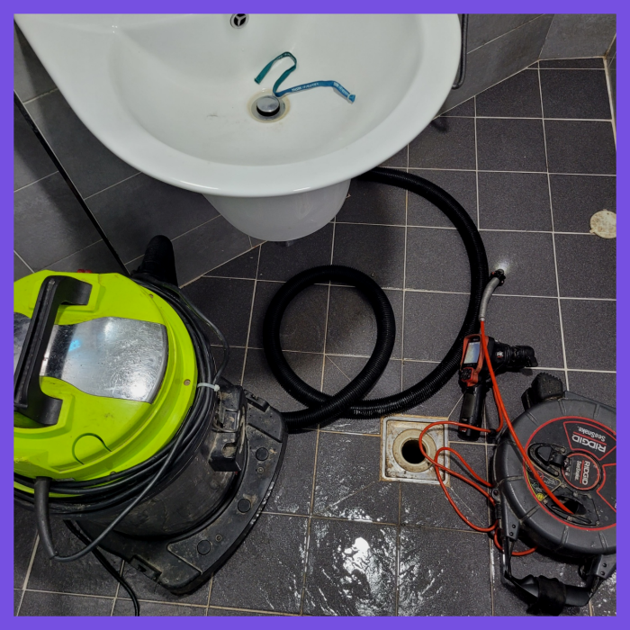
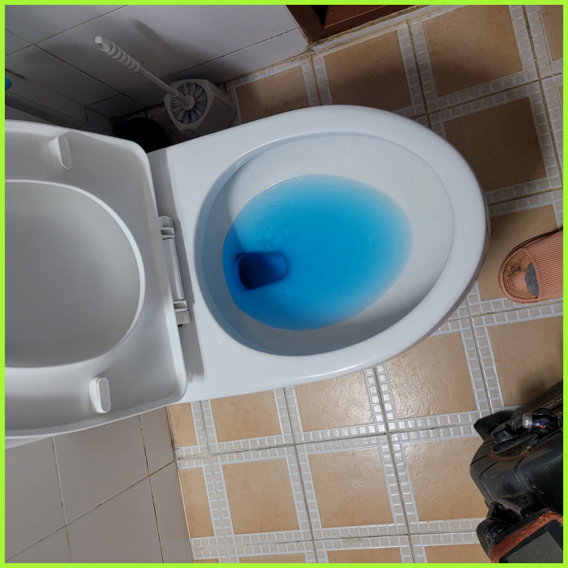
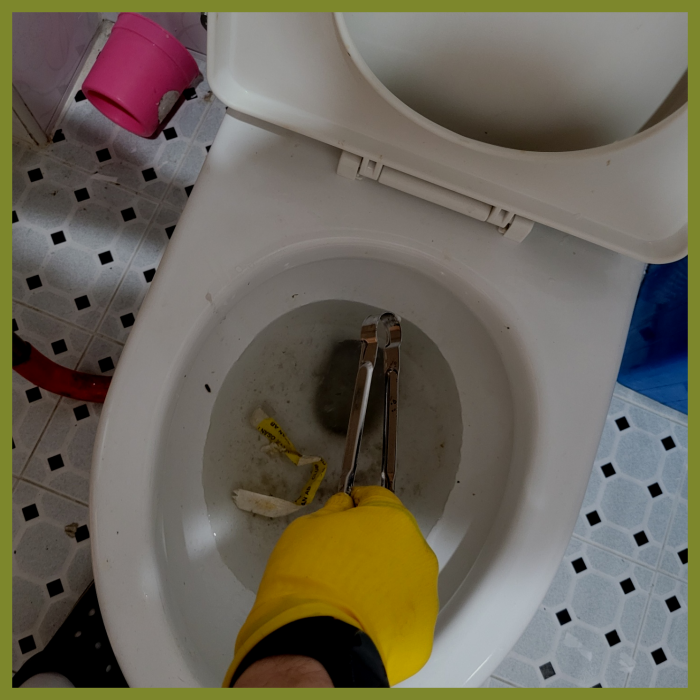
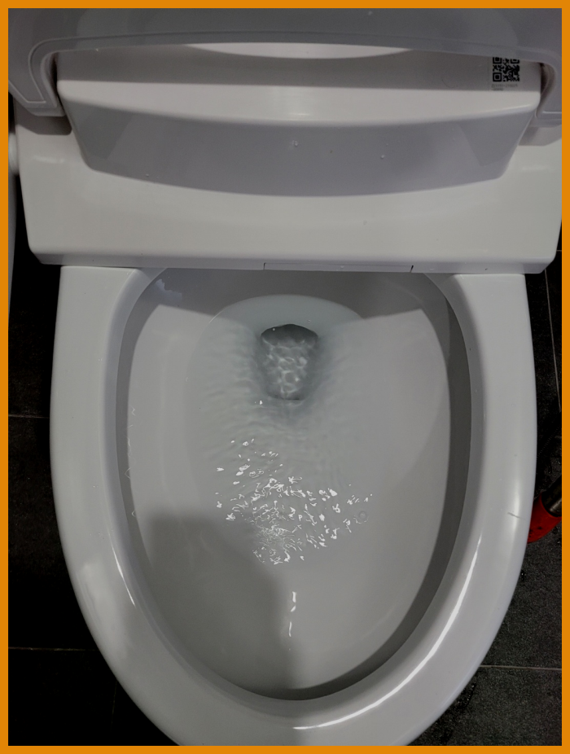

🏠 구리 대변기막힘 갈매동 인창동 오수관역류 배관뚫는업체 수리
용인 싱크대막힘 전문 시공 후기

📋 작업 개요
- 위치: 용인
- 서비스 유형: 싱크대막힘, 변기막힘, 하수구막힘, 배관막힘, 역류해결, 뚫는업체, 배관청소
- 작업 일시: 2024. 1. 19. 18:57
- 업체명: 하수구수사대 (010-5615-2118)
🔍 문제 상황
안녕하세요^^
설비전문업체 "하수구수사대"를 찾아주셔서 고맙습니다^^
보이지 않는 하수가 막힌 경우에는 고객님께서는 더욱이 손을 쓸수 없는 상황에 당혹감을 느끼실 수밖에 없게 될 것인데오ㅛ. 이럴때는 혼자서 해결을 하려고 하지 마시고 반드시 하수전문업체를 통해서 해결을 하실 것을 추천드립니다.
구리 대변기막힘 갈매동 인창동 오수관역류 배관뚫는업체 수리

🔎 원인 분석
💡 전문가 진단: 구리 대변기막힘 갈매동 인창동 오수관역류 배관뚫는업체 수리
배수구장비는 구비가 쉽지 않은 비싼 장비들을 일반업체들이 준비가 불가능하며 완벽한 작업을 필요로 하신다면 필수적으로 보아야 하는 장비들이 있습니다.
퇴수구전문가에게 도움을 받으려 해도 얼마가 들지 모르기 때문에 고민이 되는 게 당연하시겠지만 시간이 흘러갈수록 비용도 늘어나기 때문에 증상이 발견되었을 때 당장 고칠 생각이 없더라도 얼마나 심각한 것인지 견적 정도는 받아보시는 것을 추천드립니다.
퇴수 힘은 여기에 우선 석션 장비를 이용해 흡입으로 처리 가능한지 조사했는데요.그렇지만 아쉽지만 사실상 흡입하는 식으로 나오는건 전혀 없었고, 예상보다 퇴수배관 안쪽을 틀어막고 있는 슬러지라든지, 이물질의 양과 단단함이 상당함을 느끼게 되었습니다.
대부분 가격을 미리 정해놓고 출동하는 곳들은 어떤 상황이든 간에 같은 작업만 해주고 철수하는 받은 돈만큼만 일하곤 합니다. 상황을 직접 보기 전에 미리 정한 뒤 방문한 것이기 때문에 출동할 때 가지고 나가는 배수장비들도 그다지 많지 않을 것입니다.
배관 안에 있는 것이 무엇인지 파악도 못해놓고 통수만 해준다면 다시 막혀버리게 되는 경우의 수만 늘어나게 되겠죠. 배수스케일링을 할 때는 여러 번 받을게 아니라 딱 한 번만으로 해결해야 해요.

🔧 작업 과정
사용을 안한다면 나아지진 않을까싶으실겁니다 흔한경우는아니지만 방치해버리게되면 배수 배관안쪽에 자리잡고있는 이물질에서부터 유발되는 악취들은 막을수가없답니다.
샤프트기에 대해 간략하게 설명해 드리겠습니다. 샤프트기는 긴 케이블과 드릴을 연결하여 작동합니다. 드릴이 돌아가는 힘으로 긴 케이블 끝에 있는 헤드의 분쇄 전문장비를 회전시켜 이물질을 분쇄합니다. 배관 깊숙한 곳까지 전문장비를 내린 뒤 작동시키면 내부에 있던 방해물을 제거해 줍니다. 단단하게 굳어있는 석회질을 제거할 때도 사용합니다.
이같은체계가 생겨난이유는 소비자분과의 신망을 지키기위해서 생긴것이고 이같은모토를 지키기위해 하수구에이물질이없게끔 하고있답니다.비용에대해서 알고싶으실수있는데요.배수의어떤곳이 어느만큼 파손된건지에따라 견전가가정해지기때문에 정확하게 하시려면 내방해서 확인해보는게 정확한데요.
만약 적합한 배수장비를 잘 갖추지 못한 곳이라면 이유를 알아낸 후에도 해결하지 못하는 최악의 상황도 발생할 수 있습니다. 게다가 처음에는 실내에서만 문제가 생긴 줄 알고 의뢰하였지만, 배수작업을 하다 보니 해당 작업이 실외까지 이어지는 경우도 존재합니다.
상가건물이다 보니 특정되지 않은 사람들이 이용하는 곳이고, 퇴수막힘으로 오랜 기간 사용이 어려워지면 안되기 때문에, 관리인 분과 시간을 맞추어 빠르게 출동을 도와드렸습니다.
그러기 위해서는 플렉스 샤프트라는 장비를 준비해야 합니다. 이 장비는 얇은 케이블이 노 커 체인이 달린 형태인데요, 배관 안으로 들어가서 이물질이 자리한 곳에 직접적으로 회전력을 이용해 잘게 분쇄하는 작업을 합니다.
하루를 거르지 않고 실패한 하수관현장들에 방문을 드리고 있는데 이런 부분이 미흡했던 다른 업체가 어려운 하수관현장에서 성공하지 못하고 도망가 버려서 처음 상황보다 걷잡을 수 없게 된 곳을 매우 자주 보고 있답니다.


✅ 작업 완료
혹시 지금 퇴수 막힘으로 고민을 하신다면 주저하지 마시고 문의하세요.그래야 지금 바로 이물질 제거가 쉽습니다.
#하수구막힘 #하수구뚫음 #하수구역류 #씽크대막힘 #싱크대역류 #오수관막힘 #하수구청소 #욕실하수구막힘 #변기막힘 #하수구뚫는비용 #싱크대수리 #화장실막힘




⚠️ 주방 싱크대 배관 막힘 예방 수칙
- ✅ 기름기가 묻은 식기나 프라이팬은 설거지 전 키친타올로 반드시 기름때를 닦아내세요.
- ✅ 주기적으로 싱크대 개수대에 뜨거운 물을 가득 받아 한 번에 내려 배관 내부 기름을 씻어내세요.
- ✅ 배수구 거름망을 미세한 필터로 사용하시고 음식물 찌꺼기가 틈으로 새어 들지 않게 관리하세요.
- ✅ 베이킹소다와 식초를 뜨거운 물과 함께 일주일에 한 번씩 부어주면 배관 살균과 막힘 예방에 좋습니다.
💡 핵심 정리
- 확실한 장비 작업(내시경 점검 및 샤프트 스케일링)으로 원인을 뿌리 뽑습니다.
- 작업 후 1년 이내에 동일한 부위 재발 시 100% 무상 A/S 서비스를 보장합니다.
- 서울 · 경기 · 인천 전 지역에 24시간 언제든 긴급 출동할 수 있도록 항시 대기 중입니다.
❓ 자주 묻는 질문 (FAQ)
🚨 용인 싱크대막힘 문제로 고민이신가요?
정확한 원인 진단과 확실한 시공으로 재발 없는 해결을 약속드립니다.
24시간 긴급 출동 | 서울 · 경기 · 인천 전지역 | 1년 내 재발 시 무상 A/S